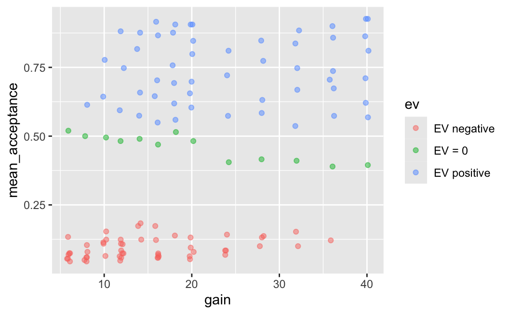
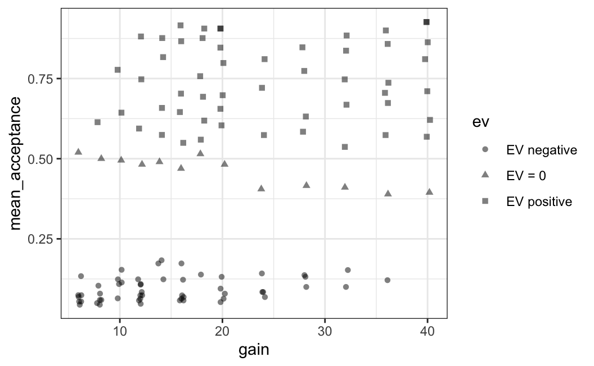
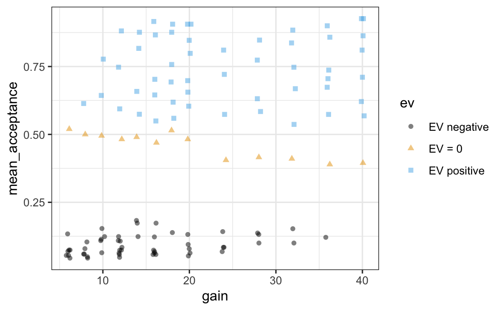
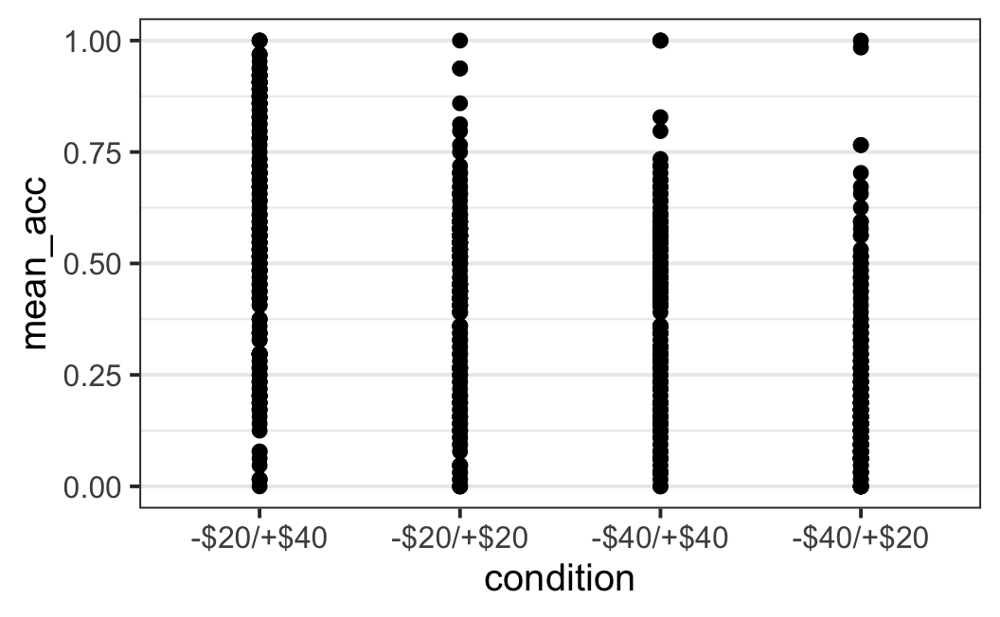
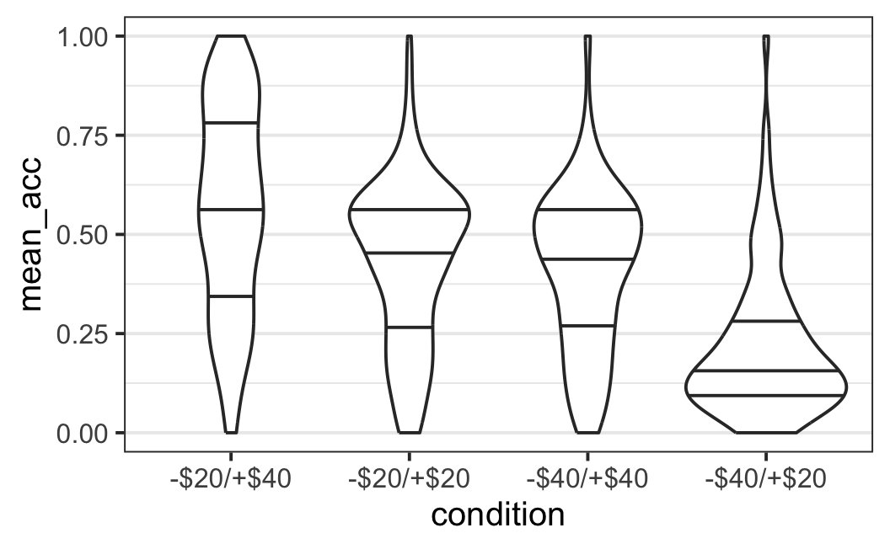
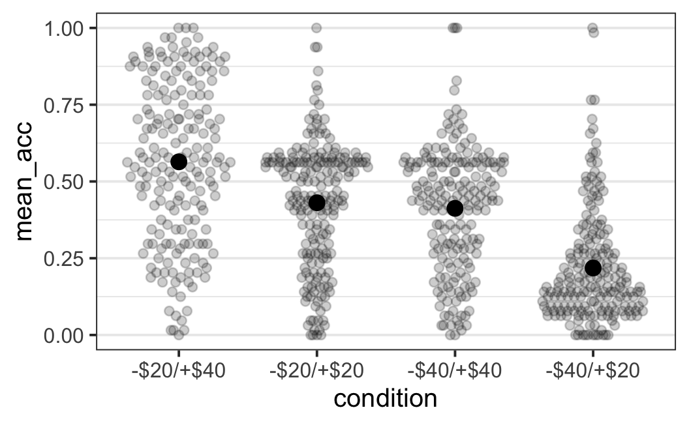

Chapter 4 Data Visualisation with ggplot2
The perhaps most prominent member of the tidyverse, which technically also pre-dates the tidyverse by several years, is ggplot2, a system for declaratively creating graphics, based on the book “The Grammar of Graphics” (Wilkinson 1999).
To understand what how ggplot2 works, it makes sense to contrast it to the base R graphics engine around the plot() function. For plot() creating a plot is done by drawing individual graphical elements such as points() or lines(). These functions generally only accept individual vectors or data points.
In contrast, ggplot2 requires that the data is passed either as a data.frame or tibble. With this in hand, “you provide the data, tell ggplot2 how to map variables to aesthetics, what graphical primitives to use, and it takes care of the details.” (quote from the official documentation).
library("tidyverse")
#> -- Attaching packages --------------------------------------- tidyverse 1.3.1 --
#> v ggplot2 3.3.5 v purrr 0.3.4
#> v tibble 3.1.2 v dplyr 1.0.7
#> v tidyr 1.1.3 v stringr 1.4.0
#> v readr 1.4.0 v forcats 0.5.1
#> -- Conflicts ------------------------------------------ tidyverse_conflicts() --
#> x dplyr::filter() masks stats::filter()
#> x dplyr::lag() masks stats::lag()
tbl1a <- read_csv("data/ws2015_exp1a.csv")
#>
#> -- Column specification --------------------------------------------------------
#> cols(
#> subno = col_double(),
#> loss = col_double(),
#> gain = col_double(),
#> response = col_character(),
#> condition = col_double(),
#> resp = col_double()
#> )
tbl1a <- tbl1a %>%
mutate(
subno = factor(subno),
response = factor(response, levels = c("reject", "accept")),
condition = factor(condition,
levels = c(40.2, 20.2, 40.4, 20.4),
labels = c("-$20/+$40", "-$20/+$20", "-$40/+$40", "-$40/+$20"))
)
glimpse(tbl1a)
#> Rows: 22,912
#> Columns: 6
#> $ subno <fct> 8, 8, 8, 8, 8, 8, 8, 8, 8, 8, 8, 8, 8, 8, 8, 8, 8, 8, 8, 8, ~
#> $ loss <dbl> 6, 6, 6, 6, 6, 6, 6, 6, 8, 8, 8, 8, 8, 8, 8, 8, 10, 10, 10, ~
#> $ gain <dbl> 6, 8, 10, 12, 14, 16, 18, 20, 6, 8, 10, 12, 14, 16, 18, 20, ~
#> $ response <fct> accept, accept, accept, accept, accept, accept, accept, acce~
#> $ condition <fct> -$20/+$20, -$20/+$20, -$20/+$20, -$20/+$20, -$20/+$20, -$20/~
#> $ resp <dbl> 1, 1, 1, 1, 1, 1, 1, 1, 0, 1, 1, 1, 1, 1, 1, 1, 0, 0, 1, 1, ~4.1 First ggplot2 Example
What this means in practice is the first thing to think about is which variables in your data you want to show on which of the two axes? Once you have decided on this you have to consider which graphical elements, which are called geoms in ggplot2 terminology, you want to use to show the data. Let us exemplify this with a first example from the Walasek and Stewart (2015) data.
One intuition we could have is that the probability that a lottery is accepted is related to the size of the potential gain, if we average over all other variables (i.e., potential loss and condition). One way to investigate this would be to calculate the average acceptance probability for each possible gain and plot this on the x-axis against the average accept probability on the y-axis. For this, we first summarise the data in this way.
lot_sum <- tbl1a %>%
group_by(gain) %>%
summarise(mean_acceptance = mean(resp))
lot_sum
#> # A tibble: 13 x 2
#> gain mean_acceptance
#> <dbl> <dbl>
#> 1 6 0.0943
#> 2 8 0.138
#> 3 10 0.214
#> 4 12 0.222
#> 5 14 0.340
#> 6 16 0.326
#> # ... with 7 more rowsLooking at the returned tibble already shows that our intuition is probably not too off, but let us plot the data to get a better look. For this, we pass it to the ggplot() function as shown next.
ggplot(lot_sum, aes(x = gain, y = mean_acceptance)) +
geom_point()
This plot shows a clear relationship between the mean acceptance rate of a lottery and its potential gain. Let us now describe the call in detail:
- To create a plot with
ggplot2we generally want to call theggplot()function for which the first argument is the data we want to plot. Because the data is the first argument, we can also directly pipe into theggplot()function as shown below. - The second argument is the
aes()function which is used to map variables in the data onto aesthetics. In this call we only consider two aesthetics, thexandyaxes. These two are probably the most important aesthetics, but we will also use other aesthetics such aslinetype,size, orshapeof the data points. In general, an aesthetic is a feature of the plot which changes as a function of the values of the variable. - After passing the data and specifying the aesthetics, we close the
ggplot()call (i.e., close the opening parenthesis) and then add further arguments, which are passed as function calls, to the plot using+. - The most important set of arguments to pass are
geoms (or geometric objects). Here we passgeom_point()to indicate that we want to plot all points of the data.
Another important thing with ggplot2 is that we cannot only use one geom, but multiple. For example, we could add a line on top connecting all the data points:
ggplot(lot_sum, aes(x = gain, y = mean_acceptance)) +
geom_point() +
geom_line()
One thing of note is that usually geom_line() requires the use of the groups aesthetic. And if all data points are connected, as in the present case, group should be 1 (i.e., geom_line(aes(group = 1))). So the following is equivalent in the present case, but is an idiom one should be aware of.
ggplot(lot_sum, aes(x = gain, y = mean_acceptance)) +
geom_point() +
geom_line(aes(group = 1))
4.2 Two Continuous Variables
The examples above show a simple case of plotting two continuous variables, the dependent variable is shown on the y-axis and the independent variable (for this plot) on the x-axis. Let us now consider a few more cases of plotting two continuous variables, by extending the data we are looking at.
In the plots above we have averaged over all possible potential losses when looking at the effect of gain on average acceptance rates. We will now plot the case in which we consider each individual lottery – that is, each unique combination of potential gain and loss – as one data point (i.e., we will not average over all potential losses for one gain). Additionally, to reduce the influence of the condition manipulation we will only consider the two symmetric condition in which the range for losses is equal to the range for gains. Let us begin the analysis by preparing the corresponding data.
lot_sum2 <- tbl1a %>%
filter(condition %in% c("-$20/+$20", "-$40/+$40")) %>%
group_by(loss, gain) %>%
summarise(mean_acceptance = mean(resp))
#> `summarise()` has grouped output by 'loss'. You can override using the `.groups` argument.
lot_sum2
#> # A tibble: 119 x 3
#> # Groups: loss [13]
#> loss gain mean_acceptance
#> <dbl> <dbl> <dbl>
#> 1 6 6 0.510
#> 2 6 8 0.615
#> 3 6 10 0.729
#> 4 6 12 0.844
#> 5 6 14 0.833
#> 6 6 16 0.906
#> # ... with 113 more rowsFor our first plot, we begin with the same call as above and only change the data that is passed to the ggplot() function.
ggplot(lot_sum2, aes(x = gain, y = mean_acceptance)) +
geom_point()
This plot is difficult to interpret. We see that there are some lotteries with very low acceptance rates between 0 and around 0.2 as well as another group with acceptance rates between around 0.3 and 0.85. In this plot it does not look as if a larger potential gain is associated with a larger mean acceptance rates.
One possibility for these differing visual impressions might be that there is some overlap of data points that are near 0; that is, there is evidence for over-plotting. That means that in the current plot we cannot differentiate between one or multiple data points that share the same or approximately same x and y coordinates.
One way to allow for this differentiation an see whether there potentially is over-plotting is through alpha blending (i.e., by choosing alpha < 1). Alpha blending is a computer graphics effect that creates the visual impression of semi transparency and one of the most helpful techniques for learning about over-plotting. What this means is that with alpha blending overlapping points appear darker whereas non-overlapping points do not. For example, we can set alpha = 0.25 for geom_point() as shown below. If you are wondering why alpha = 0.25 and not any other value? The answer is trial-and-error. I just tried some value (I usually start with a value below 0.5) and the tried a few until I saw a plot that looked good to me.
ggplot(lot_sum2, aes(x = gain, y = mean_acceptance)) +
geom_point(alpha = 0.25)
As you can see in the plot, there is some evidence for over-plotting. Especially for mean acceptance rates near 0 (and especially for low values of potential gains), we see several points clearly darker than the rest of the data points. However, the plot is still not very clear. For example, it is still difficult to judge how many points there are for the darker points.
One possibility to further improve on this figure is by introducing some random jitter for the plotted points using geom_jitter(). Given that the points are all on discrete x-axis positions (i.e., the even whole numbers that act as potentially gains) it makes sense to only add a small amount of jitter on the x-axis. This is done by specifying the width argument to geom_jitter(), which requires a number specifying the amount of (horizontal) jitter in units of the x-axis. Trial-and-error led me to conclude that width = 0.4 produces an appealing result.30 With jitter only on the x-axis the points retain their exact y-axis positions but are still shown around their original x-axis position.
ggplot(lot_sum2, aes(x = gain, y = mean_acceptance)) +
geom_jitter(width = 0.4, alpha = 0.25)
An important thing to know about using geom_jitter() is that due to the randomness that is used to add the jitter, this plot will look slightly different every time it is created (i.e., the code above executed). Try it out a few times to see what I mean. And while you are at it feel free to try out a few different values for the amount of jitter or what happens if you remove width = 0.4 from the geom_jitter() call. You can also try and see what happens of you add some value for height (e.g., height = 0.05).
The plot above that combines jitter and alpha blending makes it easier to see why we see such an effect of potential gain on mean acceptance rates when averaging over losses. There are many more data points with very low mean acceptance rates on the left side of the plot and many more data points with medium to high acceptance rates on the right side of the plot. If we imagine taking the mean of this points we can imagine a monotonically increasing mean acceptance rate.
One question that this plot leaves open is the question of why we see this qualitatively different pattern for mean acceptance rates of lotteries. Why are some so low and other larger? To elucidate this question we are going to create a new factor, ev, which separates the expected value of the lottery (i.e., loss plus gain) into three bins: expected value = 0 (i.e., symmetric lotteries), negative expected value (i.e., potential loss larger than potential gain), and positive expected value (potential loss smaller than potential gain).
To create the ev variable, we use another dplyr function, case_when(). case_when() is a vectorised variant of multiple branching (i.e., if-else). This allows to create a new variable based on multiple logical conditions in a convenient way. Each argument to case_when() consists of a logical statement, the ~ operator (which I call the tilde-operator), and a return value that is returned in case the logical condition is true. Here we have three logical cases which are each mapped onto one label describing the sign of the expected value. We also convert the ev variable into a Factor using factor().
lot_sum2 <- lot_sum2 %>%
mutate(ev = factor(case_when(
gain == loss ~ "EV = 0",
gain < loss ~ "EV negative",
gain > loss ~ "EV positive"
)))
lot_sum2
#> # A tibble: 119 x 4
#> # Groups: loss [13]
#> loss gain mean_acceptance ev
#> <dbl> <dbl> <dbl> <fct>
#> 1 6 6 0.510 EV = 0
#> 2 6 8 0.615 EV positive
#> 3 6 10 0.729 EV positive
#> 4 6 12 0.844 EV positive
#> 5 6 14 0.833 EV positive
#> 6 6 16 0.906 EV positive
#> # ... with 113 more rowsWe can then use the new ev variable to print points in a different colour depending on the value of the ev variable. For this we just need to map the ev variable to the colour aesthetic in the aes() call and get a very interesting plot.
ggplot(lot_sum2, aes(x = gain, y = mean_acceptance, colour = ev)) +
geom_jitter(width = 0.25, alpha = 0.5)
And whereas this plot already looks very interesting, it uses both green and red colours which can be difficult to see for individuals with colour blindness (such as me, even if my colour blindness is very mild). Therefore, we can make this plot nicer in two regards: (1) by using a somewhat nicer theme than the default which removes the grey background (e.g., my favourite is theme_bw()) and (2) we can use a colour blind friendly colour palette. For this we use ggthemes::scale_colour_colorblind() (here ggthemes:: just means we use a a function from the ggthemes package without loading it explicitly beforehand). This gives us a very appealing and interesting plot.
ggplot(lot_sum2, aes(x = gain, y = mean_acceptance, colour = ev)) +
geom_jitter(width = 0.25, alpha = 0.5) +
ggthemes::scale_colour_colorblind() +
theme_bw()
This plot shows that if the expected value is negative, participants are highly unlikely to accept a lottery. If the expected value is 0 (i.e., for symmetric lotteries) the acceptance rates start out at around 0.5 for small potentials losses and gains and decrease a bit with increasing loss/gain (just as predicted by loss aversion, see Section 1.2.1). Finally, for lotteries with positive expected value (i.e., where on average we should win money) acceptance rate are at or above 0.5. Just as one would expect.
Are we done yet with this data? Not yet. There is one more trick we can use to make the plot even more informative. We can map the loss variable onto the size of the data points. For this, we just add size = loss to the aes() call. This allows us to further understand the pattern.
ggplot(lot_sum2, aes(x = gain, y = mean_acceptance, colour = ev, size = loss)) +
geom_jitter(width = 0.25, alpha = 0.5) +
ggthemes::scale_colour_colorblind() +
theme_bw()
We can now see something that should not be too surprising. If the potential loss is small, which is now indicated by a small data point, the average acceptance rate is high. And the higher the potential gain for one specific potential loss (i.e., point size) the larger the mean acceptance rate. For each x-axis position on which we have data, we can also nicely see a size based ordering: The small losses have the largest mean acceptance rates and the large losses the smallest. In sum, even though the plot reveals a few pattern that should not be too surprising, it provides a comprehensive overview of the data of Walasek and Stewart (2015) (at least the two symmetric conditions).
4.3 Changing ggplot2 Theme for R Session
So far we have looked at two continuous variables and seen how by mapping different variables to different aesthetics and by changing the arguments to the aesthetics, we can create appealing figures. Below we are trying to do the same for a situation that is potentially more common for experimental data, a situation with one continuous dependent variable and one categorical independent variable.
Before producing the data, we are going to do something we will continue to do throughout this book. We will change the default theme (i.e., the theme that will be automatically used by all plots in one R session unless a different theme is specifically requested) to a theme without the grey background. In this call, we also make a few more changes such as larger axes labels and remove unnecessary grid lines which I feel makes such plots generally nicer.
theme_set(theme_bw(base_size = 15) +
theme(legend.position="bottom",
panel.grid.major.x = element_blank()))Note, this is a global options that will affect all plots created after executing this command within an R session (i.e., to reset to the default theme you would have to restart your R session).
4.4 One Continuous and one Categorical Variable
Before creating plots with one continuous dependent variable and one categorical independent variable, we need to create the corresponding data from. In the plots above we have aggregated the data of Walasek and Stewart (2015) on the level of the individual lotteries (i.e., unique combination of gains and losses). Whereas this made sense for the plots above, it ignored the different participants (i.e., we aggregated across participants), which are usually considered a major source of noise. In other words, the plots above focussed on differences across lotteries but ignored differences across participants. However, as we have have discussed before, different people can do what they do for a number of different reasons, so we know that people differ quite a bit; we expect individual differences. What this means that it usually is a good idea to show the distribution of responses over participants, which provides a visual impression of the level of noise in the data.
Therefore, instead of aggregating across participants we will create a new data set for which first calculate one score per participant and condition. Then, we will plot the distribution across participants for each condition. We begin by creating this data for all lotteries. Whereas this might not be the most informative plot substantively (e.g., compared to only plotting the shared symmetric lotteries), it is more instructive in the present case as our main goal is to try out a few different plotting options. In a later section we will produce a plot of only the shared lotteries that will be more interesting for the research question of loss aversion.
part_sum <- tbl1a %>%
group_by(condition, subno) %>% # aggregate for both, condition and subno
summarise(mean_acc = mean(resp))
#> `summarise()` has grouped output by 'condition'. You can override using the `.groups` argument.
part_sum
#> # A tibble: 358 x 3
#> # Groups: condition [4]
#> condition subno mean_acc
#> <fct> <fct> <dbl>
#> 1 -$20/+$40 5 0.562
#> 2 -$20/+$40 13 0.5
#> 3 -$20/+$40 53 0.344
#> 4 -$20/+$40 61 0.484
#> 5 -$20/+$40 73 0.266
#> 6 -$20/+$40 85 0.375
#> # ... with 352 more rowsThe output shows that the individual mean acceptance rates already for the first few participants in one condition are quite variable. It also shows that the returned tibble is still grouped (See message and Groups ...):. If we were to perform other operations with it, instead of just plotting, it might be necessary to add an ungroup() as a call to the pipe to remove the grouping before performing other operations. However, as we just pass it to the ggplot() function, this is not necessary here.
4.4.1 Displaying All Data Points
As in the plot above and is a general convention, we plot the dependent variable, the average acceptance rate per participant, on the y-axis and the independent variable, experimental condition, on the x-axis. As above we begin by plotting the individual data point as points using the point geom (i.e., geom_point()).
ggplot(part_sum, aes(x = condition, y = mean_acc)) +
geom_point()
The resulting plot is a bit difficult to interpret. We can see that there seems to be some differences between conditions (e.g., less large mean acceptance rates in the two right-most conditions), but it is difficult to judge if points are on top of each other – that is, whether there is over-plotting or not. Because of this, it is difficult to adequately perceive the distribution of points.
We can begin as above and add jitter to the points using geom_jitter() and also use alpha blending (i.e., alpha = 0.25). In contrast to above, let us start without specifying any amount of horizontal (i.e., width) or vertical (i.e., height) jitter. In this case, geom_jitter() automatically adds both horizontal and vertical jitter.
ggplot(part_sum, aes(x = condition, y = mean_acc)) +
geom_jitter(alpha = 0.25)
The resulting plot is not very visually appealing. The amount of horizontal jitter is too large making it difficult to see to which x-axis position (i.e., experimental condition) a point belongs to. To improve the visual impression it is better to choose the amount of jitter by hand. To do so, we need to choose the amount of jitter in x-axis units and pass it to the width argument. The problem for this is that the x-axis shows a categorical variable which does not have a easily identifiable unit. The solution to this problem is that for a categorical variable each x-axis position is shown at one whole number starting at 1 with a difference of 1 between levels of the categorical variable. That means, in the plot above the “actual” x-axis positions are 1, 2, 3, and 4, corresponding to the four factor levels. Thus, let us try to improve the plot by specifying an amount of horizontal jitter, such as width = 0.2 (which again was found by trial-and-error) and no height (which implies height = 0).
ggplot(part_sum, aes(x = condition, y = mean_acc)) +
geom_jitter(width = 0.2, alpha = 0.25)
This plot provides a better overview of the distribution. We can for example clearly see that only for the -$40/+$20 (i.e., right-most) condition the majority of data points is below 0.25.
4.4.2 Bee Swarm Plot
An alternative to geom_jitter() in such a case that avoids overplotting is offered by the two geoms in the ggbeeswarm package, geom_beeswarm() and geom_quasirandom(). The choice between both geoms usually depends on the amount of data points and overlap of points. Here to me the structure provided by geom_beeswarm() seems slightly nicer, but please try geom_quasirandom() as well (which as the name suggests uses randomness as well). To use both geoms, we first need to load the ggbeeswarm package (and if it is not yet installed, do so first through install.packages()).
library("ggbeeswarm")
ggplot(part_sum, aes(x = condition, y = mean_acc)) +
geom_beeswarm()
What geom_beeswarm() does is produce a bee swarm plot; that is, a plot in which over-plotted points are displaced so they are shown adjacent or next to each other (in this case on the x-axis). This allows some interesting conclusions for our data.
For example, for the -$20/+$40 condition the distribution is very wide with some data points along the whole range and almost no part with a particular bump in the shape or cluster of the data. In contrast, the other condition have a more or less clearly identifiable centre with a cluster of data points (around 0.5 for the two symmetric distributions and near the bottom for the -$40/+$20 condition).
4.4.3 Box Plot
Alternatives for visualising the distribution of data points are geoms that do not plot each data point, but a summary of the distribution. The most popular of these are the box plot and the violin plot, geom_boxplot() and geom_violin().
Box plots, also known as a box and whiskers plot, visualise a distribution through several summary statistics plus showing potential “outliers.” This provides a compact summary of the data that can also be used in case of many data points. Let us show how it looks for our data, before explaining the visual elements in detail.
ggplot(part_sum, aes(x = condition, y = mean_acc)) +
geom_boxplot()
We can see that each box plot consists of a box, with a thicker line somewhere inside, as well as two whiskers. In some cases, we see additional data points outside the whiskers, these are the “outliers.” The thick line inside the box is a measure of the central tendency of the data (i.e., a measure of the centre of the distribution). Here it shows the median, which is the most common choice for box plots (sometimes box plots also show the mean as the measure of central tendency). The median is the value that separates or cuts the distribution of points into a lower and upper half. Technically, this means the median is the 50% quantile, the data points for which 50% of data points are smaller and 50% of points are larger.31
The upper and lower bound of the box, the two hinges, show the 25% and 75% quantiles of the data. That is the data point for which either 25% or 75% of data points are smaller. As a consequence the box encompasses 50% of all data points. This allows one to judge where most of the data is. For example, in line with the earlier visual impression that the -$20/+$40 spans the whole range of the scale, the box encompassing 50% of the data also spans roughly 50% of the scale. For the other conditions with a more clearly defined centre, the box is noticeable smaller.
The two whiskers on both ends of the box (or hinges) extend from the hinges to the largest value no further than 1.5 times the size of the box (i.e., 75% quantile - 25% quantile, which is known as the interquartile range). The idea of the whiskers is that they represent, in some sense, the typical range of a distribution and data points that are outside this typical range can be considered un-typical. Such un-typical data points are often called “outliers,” but it is unclear in what sense this terminology is appropriate. For example, in the present case we have quite a few data points per condition (between 80 and 90) so it does not seem unlikely to observe some cases that look somewhat different from the other cases (i.e., un-typical).
The issue of what to do with “outliers” such as those identified by a box plot is not trivial. If the “outlier” is a genuine response of a participant then simply removing it seems not appropriate. More specifically, omitting data because it does not fit with our idea of the data can be seen as an instance of data fabrication. On the other hand, if a single response has an extraordinary influence on the results (e.g., a single data point is so far away from all the others that is drives an observed effect) this also is problematic. We usually want that our results represent the data overall and not just a single observation. Thus, as with many situations in an analysis, how to deal with “outliers” depends on the specific context and situation. A generally reasonable strategy is to see if the qualitative pattern of results changes whether extreme data points are included or not. If not, this shows that they do not have an extraordinary influence on the results.
4.4.4 Violin Plots
Another possibility for visualising a distribution is through its shapes and not only through summary statistics. One popular way of doing so is through a violin plot. To create a violin plot with ggplot2, we simply need to change the geom to geom_violin().
ggplot(part_sum, aes(x = condition, y = mean_acc)) +
geom_violin()
As is clear from the plot, a violin plot makes it easy to see whether a distribution is relatively flat, like for the -$20/+$40 condition, or has one or multiple “bumps,” which we would call “modi” in statistical terminology (with the singular being “modus”). The distributions for the other three conditions could all be called unimodal. For these three conditions, the modi are located where we would expect them to be, given the previous plots, around 0.5 for the symmetric conditions and near the bottom for the -$40/+$20 condition (this is of course not surprising but has to be the case, the violin plot is just a different visualisation compared to the bee swarm plot above). If a distribution had two “bumps” we would call it bimodal, but this does not appear to be justified for the distributions shown here.
One way to increase the amount of information shown in a violin plot is by adding lines that correspond to different quantiles of the distribution. For example, to add the 25%, the 50% (i.e., median), and 75% quantile as in the box plot we could do as follows:
ggplot(part_sum, aes(x = condition, y = mean_acc)) +
geom_violin(draw_quantiles = c(0.25, 0.5, 0.75))
4.4.5 Plotting The Mean
If you are already comfortable with the scientific literature you might know that plots of one one continuous dependent variable and one categorical independent variable are quite common. Given that this is the structure of a basic experiment, this is probably the most common type of data visualisation in the scientific literature. If you already know that, you might have also noticed that the plots we have created so far diverge quite considerably from the plots you find in the literature. In particular, many published plots do not show a visualisation of the complete distribution of the data, as we have done above, but focus on one particular summary statistic of the data, the condition means.
For example, one common plot type is the so-called dynamite plot in which the means are shown in terms of a bar graph. In addition, an error bar is added to the mean as a measure of uncertainty for the mean (we will provide a more thorough explanation of error bars in later chapters). An example for the present data looks like the following.
#> Warning: `fun.y` is deprecated. Use `fun` instead.
#> Warning: Ignoring unknown aesthetics: width
As can be seen, the bar graph together with the error bar looks like a cartoon dynamite plunger, which is how the plot got its name. Even though this can be created in R, I am hiding the code here so you do not learn how to create it.
As you can maybe read between the lines, I am not a big fan of this type of plot and so are many other people interested in statistics (e.g., the Vanderbilt biostatistics department). So what is the problem with dynamite plots? Clearly the issue is not that the plot shows the means. If you remember the discussion of results of a particular study in the previous Chapter 1, the discussion of results always focussed on the conditions means (e.g., the mean acceptance rate of symmetric lotteries was 21% in the -$20/+$40 condition, but 71% in the -$40/+$20 condition). SO clearly the means are very important. As we will see in the coming chapters, there is a statistical reason for that so it makes sense to say the mean generally is the most important summary statistic of the data.
The problem with the dynamite plot is not that it shows the mean, but that it only shows the mean.32 One and the same mean can come from many different data distributions. The best example of this problem is shown in the “datasaurus plot” below (Matejka and Fitzmaurice 2017). Note that this plot shows two continuous variables and not a continuous plus categorical variable, but it nicely exemplifies the point made here. What the datasaurus plot shows is data that dramatically changes its shape, it cycles through 13 qualitatively different patterns one of which is a dinosaur, while maintaining its means plus other summary statistics (up to two decimal points) on both x-axis and y-axis.

Figure 4.1: The “datasaurus dozen.” Two variables that maintain their summary statistics while dramatic changing the shape of the data points. From Justin Matejka and George Fitzmaurice: https://www.autodesk.com/research/publications/same-stats-different-graphs
What the datasaurus impressively shows is that if one just focuses on the means or other summary statistics, there is a high chance one can miss important features in the data. Consequently, a better approach for plotting ones data is by combining a visualisation of the full distribution of the data with the mean. This is the approach we will be using throughout this book.
Another benefit of showing a visualisation of the full distribution of the data instead of just the means is that it provides a more realistic picture of the noise in the data. Remember that we said that one goal of statistics is to help us distinguishing what is signal and what is noise. If we only focus on the means, even if it includes a measure of the uncertainty of the means through the error bars, we can forget the actual level of noise in the data. By ignoring the actual level of noise, we may be inclined to draw overly optimistic conclusions from our data. The problem with such overly optimistic conclusions is that they are less likely to be correct or true than appropriate conclusions.
Combining a visualisation of the distribution of the data with the mean in ggplot2 can be achieved by adding a call to the stat_summary() function to the plot. This allows us to add a summary geom to the plot, which without additional arguments adds the mean of the data plus an error bar. Let us add this call to our bee swarm plot from above and see what happens.
ggplot(part_sum, aes(x = condition, y = mean_acc)) +
geom_beeswarm() +
stat_summary()
#> No summary function supplied, defaulting to `mean_se()`
We can see that just doing this does not lead to a dramatically different plot. The most noticeable difference is the status message telling us that the default summary function, mean_se(), was used which is what we want (so we can ignore this message). The problem with this plot is that we add the black summary point on top of the black data points. One way to improve this plot is by plotting the data points in the background in a semi-transparent manner using alpha = 0.2. And alternative would be to not change the geom_beeswarm() plot, but the stat_summary() plot (e.g., by passing colour = "red"), but this is left as an exercise to the reader.
ggplot(part_sum, aes(x = condition, y = mean_acc)) +
geom_beeswarm(alpha = 0.2) +
stat_summary()
#> No summary function supplied, defaulting to `mean_se()`
This plot now makes it easy to see both, the full distribution of the data as well as the mean (plus error bar). As said above, we ignore the technical meaning of the error bars until later and for now accept that they represent the uncertainty we have in the means.
The plot allows us an interesting conclusion with regards to the distribution and the mean. For the three conditions that have a clearly visible mode (or “bump”; i.e., all but the -$20/+$40 condition), the mode differs noticeably from the mean. The reason for this is that the distributions are asymmetric around the mode with a long tail towards one end of the distribution. Such a long tail pushes the mean away from the mode towards the tail as can be seen here. What this means is that any statistical analysis that only focuses on the mean (which are all statistical analyses discussed in this book) provides in some sense an imperfect picture of the data. Whereas the mean of course represents the average of all values (because it is defined that way) it might not always represent the most typical value of a distribution (if we want to understand a typical value as one near the mode).
The message from the previous paragraph is not that in a case with a rather asymmetric distribution focussing on the mean as a summary statistic is necessarily wrong, because it is not wrong. The message is something else: If we only focus the mean and do not show the actual data, we miss out on the nuances that real data usually have. Of course it is interesting to see what happens to the mean, it is the most important summary statistic (and in the absence of additional information the best prediction for a new observation from data is the mean, even if it is an asymmetric distribution). However, if the mean is not very typical for the distribution because of an asymmetric shape, this is an important result in addition to whatever happens to the mean. To fully understand the evidence provided by a data set, we have to understand the data fully, including it’s level of noise, peculiarities, and nuances. Therefore, always plot the full distribution when plotting the mean.
only the symmetric lotteries that are shared across conditions separately for each participant and condition.
part_sum <- tbl1a %>%
filter(loss == gain, loss %in% c(12, 16, 20)) %>%
group_by(condition, subno) %>%
summarise(mean_acc = mean(resp)) %>%
ungroup()
#> `summarise()` has grouped output by 'condition'. You can override using the `.groups` argument.
part_sum
#> # A tibble: 358 x 3
#> condition subno mean_acc
#> <fct> <fct> <dbl>
#> 1 -$20/+$40 5 0
#> 2 -$20/+$40 13 0
#> 3 -$20/+$40 53 0
#> 4 -$20/+$40 61 0
#> 5 -$20/+$40 73 0.667
#> 6 -$20/+$40 85 0.667
#> # ... with 352 more rowsggplot(part_sum, aes(x = condition, y = mean_acc)) +
geom_point()
ggplot(part_sum, aes(x = condition, y = mean_acc)) +
geom_jitter(width = 0.2, height = 0.1, alpha = 0.25)
ggplot(part_sum, aes(x = condition, y = mean_acc)) +
geom_jitter(width = 0.2, height = 0.1, alpha = 0.25)
4.4.6 One Continuous Variables: Histograms
4.5 Cheat Sheets
References
Note that the jitter width determines the horizontal amount of jitter in each direction,. That means that the total area reserved for jittered points is 2 *
width(or 0.8 in the present case). Given that the distance between adjacent x-axis positions is 2 (i.e., potential gain values are always at least 2 apart) a jitter width of 0.4 here means that the area occupied for points with the same potential gain is slightly smaller than the empty area between adjacent potential gain values (which occupies 1.2 units of the x-axis).↩︎One way to understand (and calculate) quantiles is to think about the data in an ordered manner, from smallest to largest value. If the data is ordered this way the 50% quantile (the median) is the data point right in the middle cutting the data into half (in case of an even number of data points, there is no single centre data point that cuts the data in half; in this case the 50% quantile is the average of the two data points in the centre). Any other quantile cuts the ordered data at another point. For example, the 25% quantile is the data points that cuts the data into the lower 25% and larger 75%.↩︎
Another problem that is particular to the dynamite plot is that it gives of the visual impression that there are data points below the mean (because this area is shaded), but not above the mean (because this area is unshaded). This is misleading as the mean is usually somewhere in the middle of the data (i.e., it is a measure of the central tendency of the data). Furthermore, the dynamite plot visually highlights the distance of the mean from 0, which is not always important (e.g., if 0 has no meaning, such as for a rating scale that goes from 1 to 5).↩︎